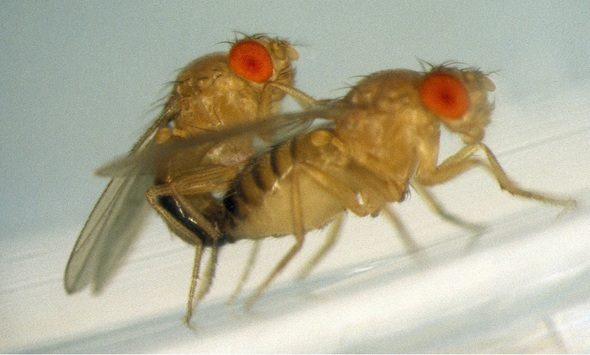

Life Logging
Home
Article
SF
Info
이전 글 가기
다음 글 보기
술을 먹는 이유
3/16/2012
기사
커플이 되면 술을 덜 먹는 것이 아니라,
커플이 못 되어서 술을 먹을 수 밖에 없다.
아, 물론 별 일 없이도 술을 먹고 싶을 때가 있어,
아주 잠시. 잠깐 그런 생각을 했긴 했어.
하지만 아냐. 아니라구.
누굴 알콜 중독자로 아나.

이전 글 가기
다음 글 보기